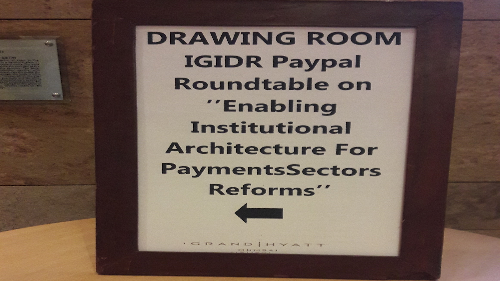
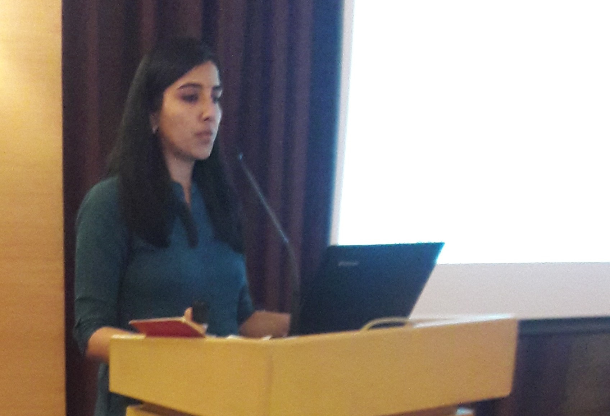
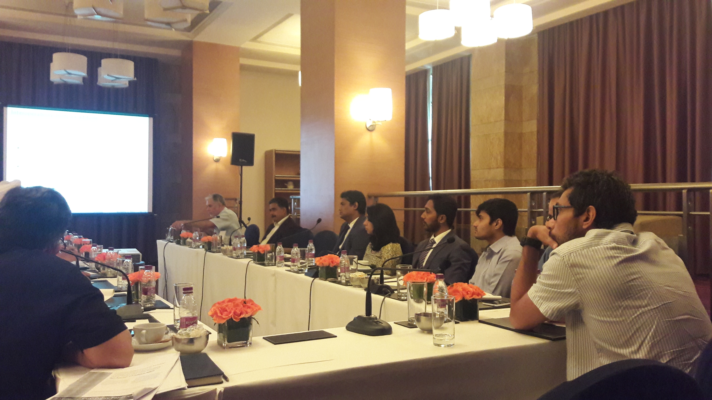
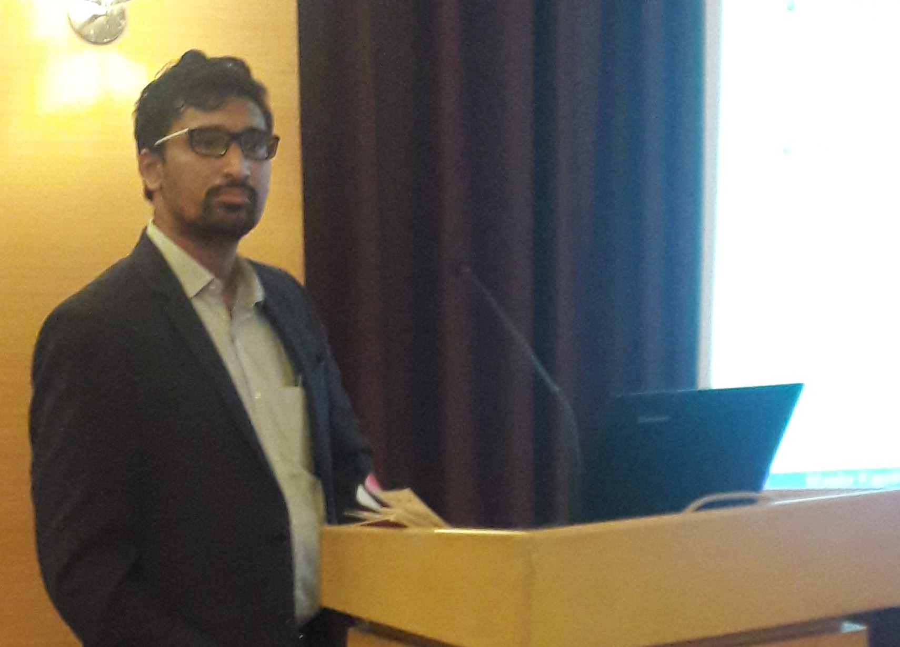
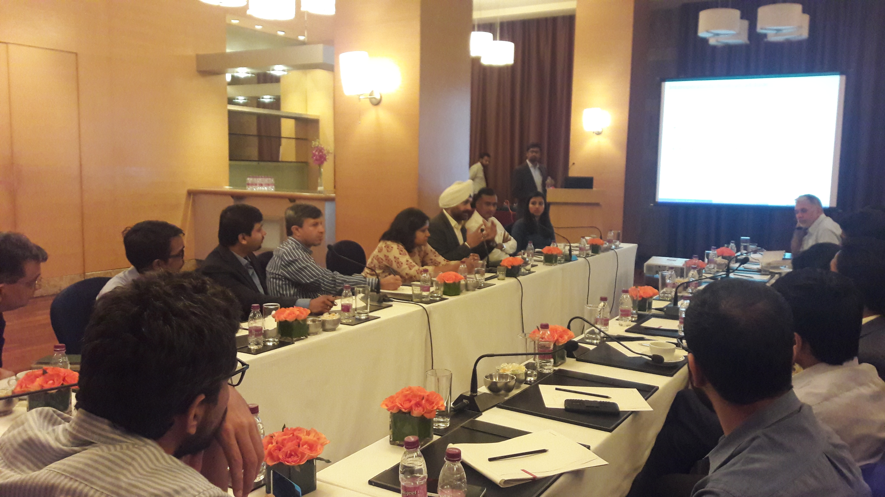
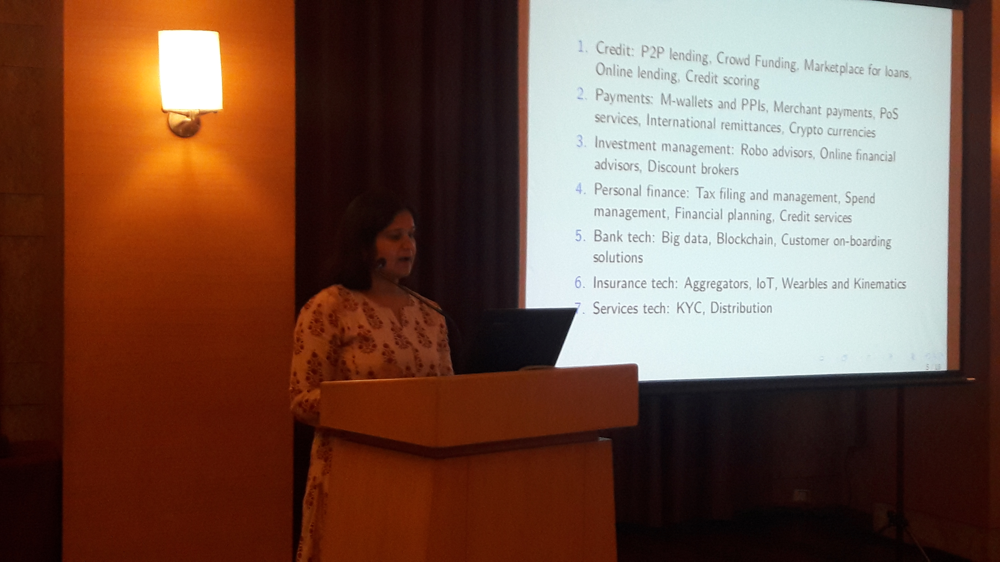

3nd November, 2017
Grand Hyatt Mumbai
The Report of the Watal Committee on Digital Payments
was released in December 2016. The Committee has made
potentially far-reaching recommendations for enabling
institutional architecture for payments sector
reforms. In this roundtable, we bring together group
of policymakers, payments system participants and
researchers to review the report from the viewpoint of
assessing how far we are from implementing it with the
emphasis on a few key recommendations.
Saliently, mandating open access and inter-operability
through RBI/NPCI is a principal recommendation of the
Committee. Further, the Committee recommended an
independent statutory status for the Board for
Regulation and Supervision of Payments and Settlement
Systems as a payments regulator. A natural corollary
would be to evaluate the potential design features
that the Board may retain to achieve its
objectives. Finally, it is important to address issues
surrounding its design and scope of regulatory sandbox
as a key enabler of payments sector innovation. The
roundtable will discuss and debate these key enablers
for payments sector reforms.
We will end with a panel discussion on
Reimagining Payments.
| Ashish Agarwal, Ajay Shah National Institute of Public Finance and Policy |
| Chetna Batra, Research Scholar, Department of Management Studies, IIT Delhi |
| Poorna Bhattacharjee, International Finance Corporation |
| Sreyan Chatterjee, Mandar Kagade, Anjali Sharma, IGIDR Finance Research Group |
| Ajay Kaushal, Billdesk |
| Gaurav Luniya, Sandhya Menon, CMS Infosystems |
| Poonam Mehra, NITIE |
| Rohan Mishra, Mastercard |
| P Nath, PayPal |
| Kaustubh Pandey, FCO |
| Navtej Singh, BizStrat |
| Arjun Sinha, Tri Legal |
| Utkarsh Sinha, FinTalk |
| 9:00 - 9:50 | Breakfast |
| 9:50 - 10:00 | Opening Remarks |
| 10:00 - 10:20 | Ratan Watal Committee Report: Where do we stand in implementing its recommendations
[presentation]
Chetna Batra |
| 10:25 - 10:45 | Unpacking interoperability: What is it & how to get there
[presentation]
Mandar Kagade |
| 10:50 - 11:10 | Regulatory Sandbox: Getting down to the brass tacks
Anjali Sharma |
| 11:15 - 11:35 | The Payments Regulatory Board: Getting the Design Right
[presentation]
Ashish Agarwal |
| 11:40 - 12:40 | Panel discussion: Re-imagining payments
Rohan Mishra P. Nath Ajay Shah Utkarsh Sinha [presentation] |
| 12:45 - 13:00 | Closing Remarks |
| 13:15 - 14:00 | Lunch |





